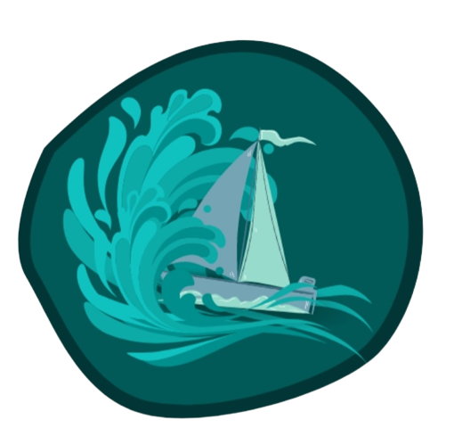

Trabalho de termodinâmica

Editorial:
Alissa
Programação do site e confecção do barco
David
Pesquisa sobre aplicações e Cálculos
Gerônimo
Pesquisa sobre as leis da termodinâmica e vídeo e edição
Matheus
Pesquisa sobre o motor e Veracidade das fontes
Pedro
Confecção da logo e programação da calculadora
Vicenzo
Pesquisa sobre as leis da termodinâmica e pesquisa sobre aplicações